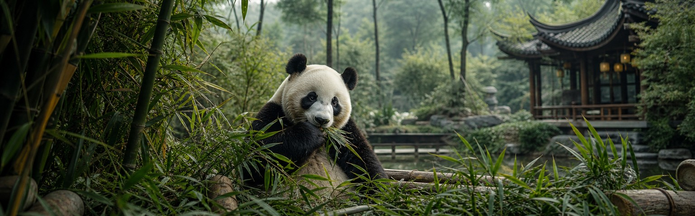
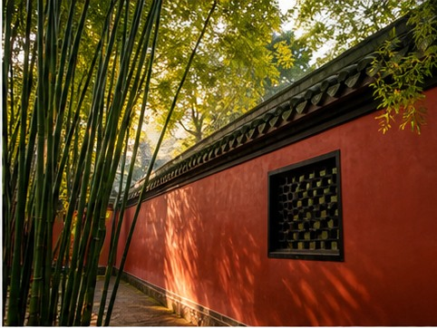
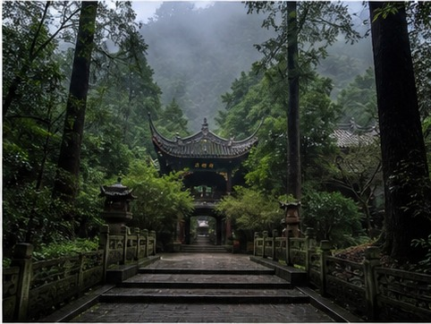

01
Panda Base
See giant pandas early in the day when they are most active.

China's capital of slow living
Set inside the Sichuan Basin, Chengdu has remained on the same urban site for more than two thousand years. It is a gateway to ancient Shu culture, the world’s best-known panda conservation base, and a city where tea houses and neighborhood parks still shape the rhythm of daily life.
Pandas may bring visitors here, but food, informal street life, and the city’s relaxed confidence make them stay longer. Chengdu feels less internationally polished than Shanghai, yet that is part of its appeal: it offers a softer and more everyday way into China.
01
Start here
See giant pandas early in the day when they are most active.

Drink gaiwan tea and watch the city slow down around you.

History, red walls, and bamboo linked to the Three Kingdoms.

An atmospheric evening walk beside Wuhou Shrine.
A two-thousand-year-old irrigation system still shaping Sichuan.

Misty forest paths and Taoist temples outside the city.
02
Eat like a local

03
Recommended time
Three days cover the city and pandas; four or five leave room for Sichuan’s best nearby day trips.
Get ItinerarySee the pandas, drink tea in People’s Park, visit Wuhou Shrine, and follow one considered Sichuan food route.
Add Dujiangyan or Mount Qingcheng while keeping the city itself relaxed.
Visit both day-trip areas or add more neighborhood food, markets, and contemporary Chengdu.
Your Chengdu, made clearer
Tell us what matters most: pandas, food, tea culture, or easy day trips. We’ll make Chengdu fit naturally into your route.
Start With Your Chengdu Trip